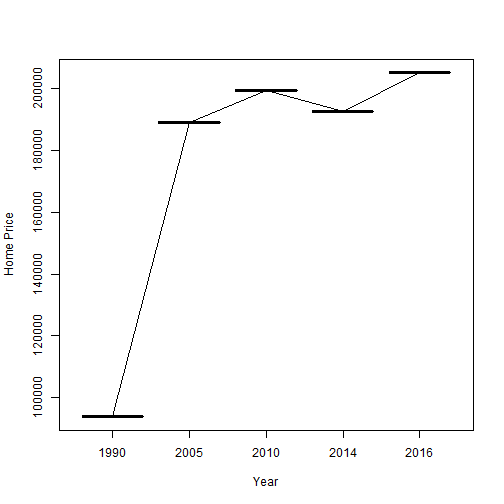

When people are looking to buy or sell a home they may be interested in comparing the current price to historical prices to see how the value has appreciated. Furthermore, they may want to see what the home may cost in a year.
Asfa L.
When people are looking to buy or sell a home they may be interested in comparing the current price to historical prices to see how the value has appreciated. Furthermore, they may want to see what the home may cost in a year.
The app takes the price of a home as an input and upon pressing "Submit" it calculates the price of the home in 1990, 2005, 2010, 2014 and 2016. The 2016 price is based on a forecast by Zillow. The scond tab in the app uses GoogleVis to create an intereactive plot of the home prices calculated in the first tab.
The historical prices were calculated based on data from he following websites:
http://www.neighborhoodscout.com/md/rates/
The Zillow forecast data can be found at:
The app takes the price input by the user and divides it by the appreciation rate for that year to obtain the price of the home that year. For the forecast it multiplies the price input by 1 plus the rate of appreciation. Below is an example with the input price of $200,000
homePrice<- 200000
costninety <- homePrice / 2.1325
costofive <- homePrice / 1.057
costten <-homePrice / 1.0031
costfourteen <- homePrice / 1.0376
costsixteen <- homePrice * 1.026
The plot then takes all the outputs and puts them in a data frame along with the corresponding years to create an interactive plot showing visually the increase in price since 1990.
y<- c(costninety, costofive, costten, costfourteen, costsixteen)
x<- c("1990", "2005", "2010", "2014", "2016")
df=data.frame(x,y)
names(df)<-c("Year", "Price")
plot(df, xlab="Year", ylab = "Home Price")
lines(df)
